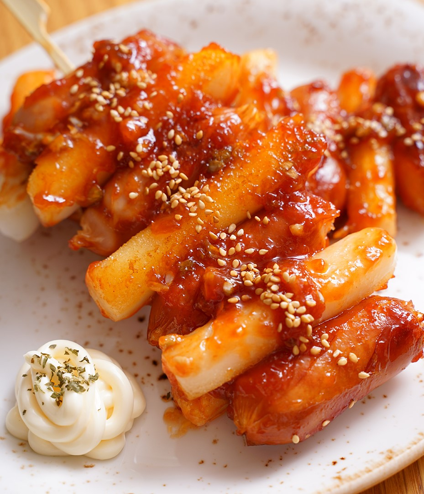

소떡소떡
재료
: 핫도그 빵 1개, 소세지 1개, 다진 마늘 1큰술, 소금, 후추, 식용유 약간,머스터드, 케찹 약간
핫도그 빵은 전자렌지에 30초 혹은 오븐에 2~3분 정도
데워주세요.
소세지는 다진 마늘로 버무린 후 식용유, 후추, 소금 솔솔 뿌려
220도 오븐에 5~7분 굽거나 오븐이 없으면 일반 후라이팬에서 구워주세요.
핫도그 빵을 절반만 갈라 소세지를 넣고 소스를 뿌리면 완성!